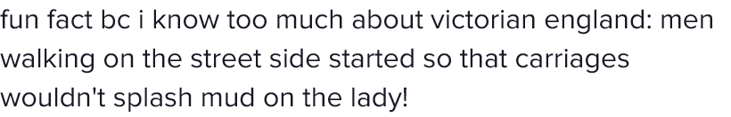

I had 5 rabbits who I raised since they were hairless newborns. In the beginning, my newborn rabbits were very friendly and docile. Several months later, when puberty happened to my young rabbits, all my female rabbits remained very friendly and docile; but all my male rabbits started violently urinating, raping, and attacking each other game of thrones style. Here is a photo I found online of a rabbit who lost his eye from fighting other rabbits . This is how viciously my male rabbits fought, but luckily never lost an eye.
I tried training my male rabbits, for them to stop fighting, but it was an utter failure. One time, a male rabbit latched his teeth into my arm and humped his erect penis on my hand. One time, a male rabbit attacked another male rabbit, there was blood on their lips.
The reason why I tried training them is because I was uninformed. I thought there was something that I was not giving them that they needed. I tried giving them the most expensive food and hay, I gave them the purest reverse osmosis water, I gave them plenty of space to roam free, I gave them my daily supervision and attention.
A long time ago, when my rabbits were still drinking their mother's milk, my friend asked me "Are you going to neuter them?" I replied "No. That is barbaric and unnatural. I am just going to separate them by genders." Soon I changed my opinion.
After doing research online, I learned that male rabbits fight because of a chemical called testosterone. 95% of testosterone is produced by the testes. Castration significantly reduces testosterone and unwanted sexually dimorphic behaviours. Spaying reduces ovarian cancer in rabbits.
With this new information, I had all my rabbits spayed and neutered. The differences I noticed after their castration is my male rabbits seemed docile and civilized, they expressed zero desire to rape, the seemed less jittery and less impulsive. The castration didn't stop my male rabbits from being violent towards eachother, however, I believe this violence is a learned behavior from their fights in the past like they want revenge. My female rabbits remained the same, docile and friendly.
Male rabbits are not the only animals who fight. Many species all around the world, it is always the males who fight while the women remain docile. Here is a small list I created as examples: , betta fish, , , equine, , , rabbits, , roosters, , .
Men perpetrate 95% of all murders .
81% of homicide victims are male.

In other words, the entire male race is biologically hardwired to kill eachother. When a man sees another man, his instinct is to kill. That explains why men invented racism and started every war in history.
Men are hardwired to slut shame women. When humans were hunter gatherers, men hunted animals, and pregnant women picked berries. The biggest fear a man had was "What if while I am hunting animals, my wife is having sex with another man? And there is no way of knowing who is the real father." Cuckoldry would mean his whole life is a lie, he is raising someone elses child, and his genetic lineage could die off. The best way to guarantee you are the father is by killing or sabotaging every man around you, only seek virgins, and slut shame women who are not virgins. So that's why we inherit our father's lastnames.
“Men are ‘hard wired’ to seek as many sexual partners as they can, and women to seek men of superior genetic quality.” -Michael Gilding
That moment when you realise you are not the father
This youtube video shows men are hardwired to toot it and boot it. The phrase "toot it and boot it" is when a man impregnates a female and then he dumps her. The vast majority of male animals on Earth are hardwired to toot it and boot it. The only exception are birds. 90% of birds are monogamous.
Source: Nat Geo
Men are hardwired to desire sex from multiple different women. Meanwhile, women are extremely selective of she has sex with. If a man impregnates a woman, he could always Toot It & Boot It. But if a woman becomes pregnant, she will be pregnant for 9 months. The biggest fear women have is single motherhood.
It is scientifically proven , men will have sex with almost anyone, but women are extremely selective. These scientists hired actors to ask random people of the opposite sex "Will you come over to my apartment?" 75% of men and 0% of women replied "Yes."
Women developed a mating strategy to prevent single motherhood "I need to find myself a good husband who truly loves me so even if he impregnates another woman, he will always return back to me, because he is emotionally invested in my children instead of her children." Men always cheat, and women know it, so now women only care long as he stays for the children.
According to scientists, women do not care about sexual infidelity, women only care about emotional infidelity. It's the opposite for men. Men do not care about emotional infidelity, men only care about sexual infidelity.
Women are hardwired to seek wealthy men because wealth symbolizes that a man is able to financially support children. White men and Black men are fighting each other to control the world's money. If you control the money supply, you control women and sex. Scientists said violence begins when a man feels sexually insecure about the size of his small bank account, low income men overcompensate by acting extra tough and masculine . That explains why poor neighborhoods have more violence.
According to Global Wealth Report 2019 , the vast majority of the time when a woman is a billionaire it's because she inherited a wealth or business from a husband or a father. In other words, men exclusively decide which women are allowed to be billionaires, usually the male billioniare's daughters and wives.


Using the two pie charts above, I created the three tables below. 89.8% of all convicts were male, 93.5% of violent-crime convicts were male, 93.3% of homicide-crime convicts were male.
| All Convicts | ||
| Male | Female | Total |
| 2,051,260 | 231,540 | 2,282,800 |
| Convicted of Violent Crime | ||
| Male | Female | Total |
| 845,300 | 57,700 | 903,000 |
| Convicted of Murder | ||
| Male | Female | Total |
| 167,100 | 11,900 | 179,000 |
According to European Sourcebook , the vast majority of rape, sexual assault, sexual abuse of children, robberies, drug offense; any crime that you can think of, it is almost always perpetrated by men.
I used Excel data from MappingPoliceViolence.org to create the table below. 94.7% of victims killed by police were male victims. Also, 87.2% of police officers are men .
Source:
Source:
Data acquired January 22, 2022.
TKBP = Total Killed by Police
Armed = Allegedly Armed
Vehicle = Vehicle as a weapon, learn .
TKBP=armed+unarmed+unclear+vehicle
| 2013-2021 | |||||
| All Victims | |||||
| Gender | TKBP | Armed | Unarmed | Unclear | Vehicle |
| All | 9,903 | 7,054 | 1,314 | 902 | 633 |
| Female | 494 | 290 | 119 | 25 | 60 |
| Male | 9,386 | 6,750 | 1,192 | 874 | 570 |
| Transgender | 10 | 7 | 2 | 0 | 1 |
| Unknown | 13 | 7 | 1 | 3 | 2 |
No matter how you look at the data, the data tells us all men are a potential threat.

"United States Sentencing Commission," says black women receive 29.7% SHORTER prison sentences than white men .
During 2019, 110,812 female college students participated in this survey . 24% of verbal sexual harassment against female graduate students was perpetrated by college employees; such as a teacher, advisor, faculty, coach, trainer, etc. Depending on how rape is defined, 10.9% to 16.2% of female college students experienced a completed or an attempted rape. 73.3% of female college students said their rapist was a fellow college student.
How is education supposed to fix society, when our college professors themselves are sexual harassers?
According to Global Study on Homicide, 34% of murdered women were murdered by their intimate partner, and "Men who kill their intimate partners have a markedly different profile to men who kill outside relationships, according to studies from several European countries. They tend to have better jobs and enjoy a higher standard of living than other perpetrators, and often have no criminal background. One study found that men who killed their partners were better educated than other homicide perpetrators and had fewer gaps in their employment history ,." In other words, the more money and education a man has, the more likely he is to specialize in murdering women.
What is White Privilege worth for white women when all women are afraid of being killed and raped. Women are not allowed to leave their homes. Even in their own homes, women are not safe.
5,758 random women participated in another telephone survey during 2015 ,. 21.3% of women were victims of either a completed or an attempted rape. 16% of women had felt terrorized by stalkers. 37% of women were victims of an unwanted sexual contact. 22.1% of women were victims of a physical assault from an intimate partner ,.
97.5% of sexual assaulters will never go to prison. There are more sexual assaulters in the free world than in actual prison.

You believe all humans are born innocent, and criminality is caused by Social Inequality. The truth is criminality begins around the age of 13 years old due to hormones. 42.1% of female prisoners identify as either lesbian or bisexual . In other words, female criminals have high testosterone.

,
Humans with very low testosterone can still go bald, because baldness depends on the hair follicle's testosterone sensitivity. Similarly, a human with very low testosterone could still be a psychopath, because psychopathy depends on the brain's testosterone sensitivity, especially during brain development.
According to liberals, education and income will solve all of the world's problems. If that is true, why is there sexual harrassment in college campuses? Why is there sexual harassment in the workplace? Why do rich men murder their wives? The answer is simply no matter how much money and education you throw at the entire male race, all men are biologically hardwired towards greed and violence. Do you think Jeff Bezos knows about Global Warming? Of course he does, he just doesn't give a f*ck. Men are not humans, they are animals. You can't reason with men. The best advice is to castrate all men, that is the final solution to the male question. The theory that partriachy is genetically inherited was proposed by two women, Rachel Grant, and Tamara Montrose in their scientific research paper titled "It's a Man's World: Mate Guarding and the Evolution of Patriarchy." The MAOA gene is proven to make humans violent, but it only makes you violent if you are a man.
Look at this male zebra doing domestic violence and child abuse. Even animals have patriarchy because it is hardwired into their brains.
Gender is not a social construct. It is real. So in order to build a thriving civilization, we need to segregate men and women, build separate bathrooms for men and women, separate schools, gyms, parking lots. We need to re-write our laws to punish men harder. Men should not be allowed to jog at night time. Men should not be our leaders, because wherever there is a man, there is crime and corruption. Men should not speak unless they are spoken to first by a woman. Men should walk the gutters.

Linda Heywood is an african-american woman from Boston University who estimates "90 percent of those shipped to the New World were enslaved by Africans and then sold to European traders ."
Nat Amarteifio is an african man who said "The Europeans weren’t going out and capturing Africans. They couldn’t — they got sick and died from illnesses like malaria ." Many africans possess the Sickle Cell gene which provides 60% immunity against malaria ,.
Oluwatoyin Salau was an ardent supporter of the Black Lives Matter movement . In the end, Oluwatoyin Salau was raped and murdered by a black man named Aaron Glee Jr. Oluwatoyin Salau was murdered by the same black men who she attempted to help.
Source: @_cKrust
The few white women who did own slaves, her slaves were romantic gifts from white men . In nature, this is called a Nuptial Gift. In order for a male to have sex, he needs to provide gifts to the female.
Source: Seeker
If women wanted to, they could overthrow the government and end white supremacy overnight. All women must do is stop having sex with republican men. There is just one problem. It will never work. Because there will always be women who will love to have sex with Adolf Hitler. In fact, Adolf Hitler had a wife.
| Name | Ever Married? | Children |
| Adolf Hitler | Married | 0 |
| Heinrich Himmler | Married | 3 |
| Reinhard Heydrich | Married | 4 |
| Adolf Eichmann | Married | 4 |
| Hermann Göring | Married | 1 |
| Heinrich Müller | Married | ? |
| Adolf Eichmann | Married | 4 |
| Theodor Eicke | Married | 2 |
| Richard Glücks | Married | ? |
| Ernst Kaltenbrunner | Married | 5 |

Women are incels too, aka spinsters, but you don't see women doing mass shootings. Because the problem is not "incel idealogy." The problem is men.
The majority of anti-vaxers are men.

The majority of animal rights activists are women . The majority of animal abusers are men.


The majority of suicide victims are men . Men are not only killing other people, they are also killing themselves.

In the United States between 1977-2021 there has been 1,534 death penalty executions . 17 females were executed. 98.8% of death penalty victims were male.


According to the United States Department of Justice , 92.6% of gang members are males.

The majority of voters are women .

The majority of college graduates are women. The majority of minimum wage workers are women.

The majority of road accident deaths is caused by male drivers ,.

The majority of drug overdoses are men.

The majority of drug addicts and alcoholics are men, 2:1 ratio.

The majority of homeless people are men. The majority of violent hate crimes against the homeless is perpetrated by men .